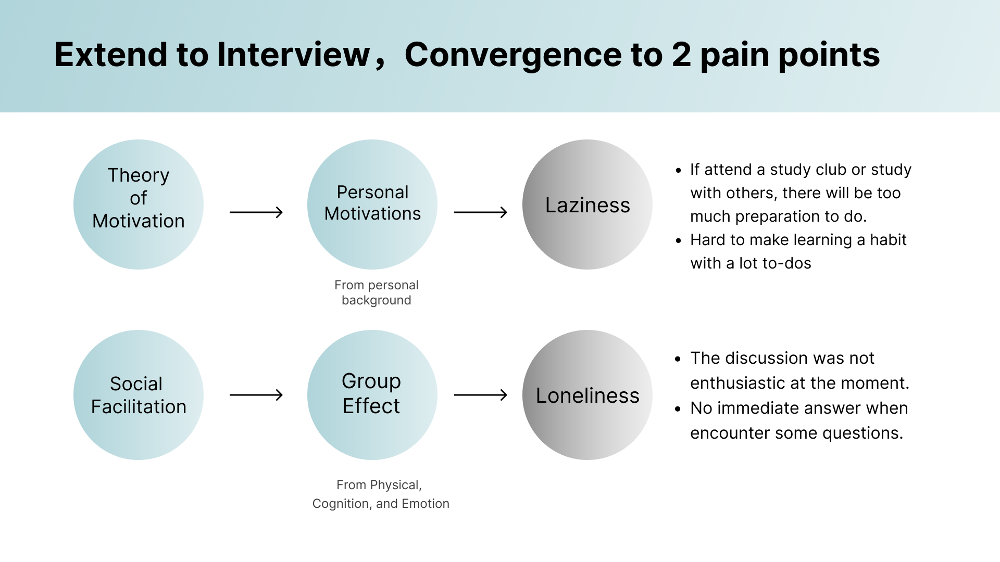
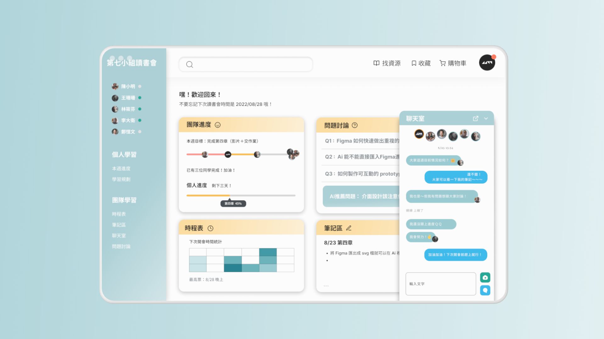

My Role
UX Researcher + UI Designer
Tools
Figma, Figjam
Timeline
2022/7 - 2022/8
Brief
Due to the pandemic, online learning expands its influence worldwide.
Online education platform has not only been used in formal education system but also become the main self-study way these days.
Problem Statement
While we are using the online learning platform alone, we often got distracted and eventually, most of us do not finish the course. Annoyed by the problem, we seek to find a better online learning way and encourage people to learn with more motivations.
We proposed a platform for online study group!
Learners can utilize the all-in-one platform and gain better learning effect.
Theoretical Background
We searched for related theories to support our research of the effect of online learning as a group.
The theory of Motivation and Social Facilitation discussed about the influencial factors in learning with peers.
We utilized the theories and aim at using a group to internalize the learning extrinsic motivation, to boost the
efficiency and effectiveness.
Interviews
Since most of the people do their online lessons alone, we wanted to know the reason behind their action and if they encountered some problems during the solo learning process.
Competitive Analysis
We did a competitive analysis with some popular online learning platform, like Hahow, Coursera, and EdX. We found out some problems that may result in learner's laziness and loneliness.
1. Too many information online, no accurate learning system.
2. No interaction in class, making people lack interest to learn.
3. When encounter some problem, there would be no immediate help.
4. No evaluation system to test out learner.
Solution
We made five main functions to tackle with the problem of laziness and loneliness, which is Time Schedule, Co-Note, Team Progress, Discussion Board, and Chat Room.

As for laziness, we customized 3 functions.
1. Time Schedule: to help the study group to schedule a group meeting.
2. Co-Note: members in the same group can write their study notes together and learn from one another.
3. Team Progress: seeing each member's progress will arouse learner's motivation and keep on learning.
As for loneliness, we customized 4 functions.
1. Co-Note: members in the same group can write their study notes together and learn from one another.
2. Team Progress: seeing each member's progress will arouse learner's motivation and keep on learning.
3. Discussion Board: discussing each other's problems will seem like having an active conversation.
4. Chat Room: Members in the same group can look after each other, just like talking to their dear friends.
Prototype

Reflection
The special part of this project is that we looked up for relevant theories to support our design and made our ideas more approachable. I believe that after knowing more about the theories, we surely made good use of it and design a usable platform. I also sharpened my UI skills more and created a more complex user flow than any previous projects. If the platform can actually put into reailty, it can surely help the online learning situation get better.
More Projects...